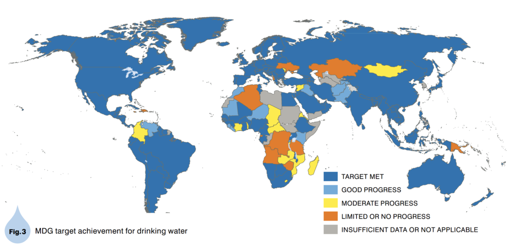

Advanced water filtration technologies
Around the world, more than 600 million people do not have access to clean drinking water. For the bulk of these people, unfiltered water is available from rivers, streams, or wells but runs the risk of contamination with pathogens or other health risks.
Countries by the level of access to safe drinking water. Source: World Health Organization.
Recent and coming advances offer ways to filter water more effectively in the field, including:
- Advanced membrane filtration
- Nanomaterials
- Metal-organic frameworks
- Advanced photocatalysts
Breakthroughs in these areas will allow for cheaper distributed filtration of drinking water, improving human health worldwide.